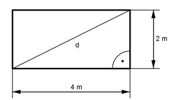

Pythagoras Aufgabe 5 Ein Rechteck ist 4 m lang und 2 m breit. Wie lang ist seine Diagonale d in m?  d2 = 42 m2 + 22 m2 = 20 m2 |√ d = 20m2 d = 4,5 m
Pythagoras Aufgabe 5 Ein Rechteck ist 4 m lang und 2 m breit. Wie lang ist seine Diagonale d in m?
